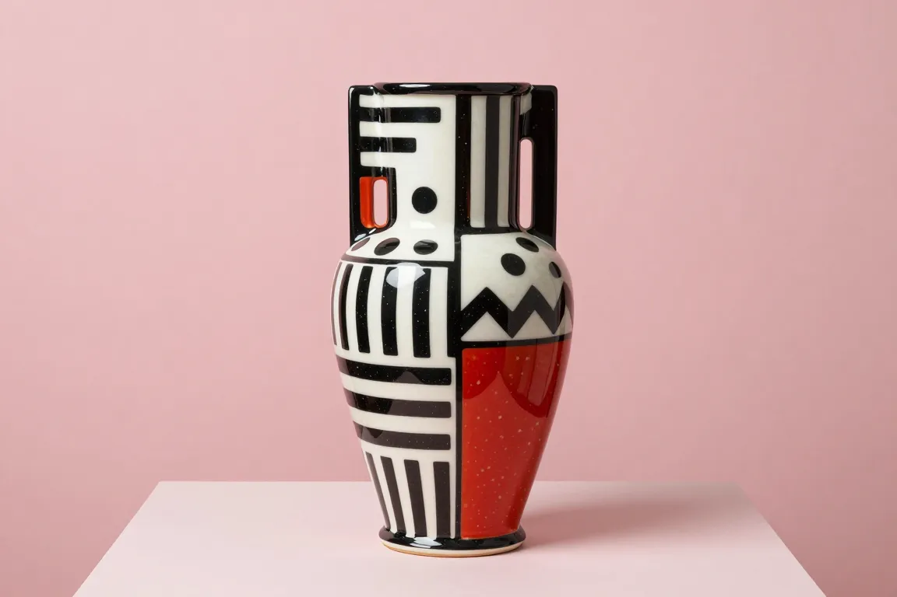

Керамические сосуды миланской группы «Мемфис» после 1981 года. Они сочетают простые геометрические тела с громким цветом и узорами из полос, точек и террацо и пренебрегают хорошим вкусом.

Главная идея
Ваза — это игрушка, тотем и шутка одновременно: её форма — стопка простых тел, а поверхность — узор громкого цвета.
Принципы дизайна
Стройте форму из 3–5 простых тел: конус, шар, цилиндр, куб и кольцо.
Берите 4 и более ярких цветов на одной вещи, чёрный и белый тоже как цвета.
Покрывайте поверхность полосами, точками, зигзагами или крапинками террацо регулярным раппортом.
Ставьте два узора на один предмет и пусть они спорят.
Делайте глазурь плоской и глянцевой, чтобы форма и цвет читались как одна графика.
Называйте каждую вещь по месту или мифу и подписывайте именем дизайнера.
Печатайте узор шелкографией или декалью и закрепляйте вторым обжигом при 750–850 °C.
Обращайтесь с сосудом как с заявлением, а не как с ёмкостью: у вазы может не быть рабочего отверстия.